Advanced Usage¶
Choosing the Clustering Algorithm¶
Hierarchical Agglomerative Clustering¶
This algorithm is recommended when the population does not contain too many patients (< 8000 patients).
from opentak import TakBuilder, TakVisualizer
tak_hca = TakBuilder(base).build()
tak_hca.fit()
tak_hca_viz = TakVisualizer(tak_hca)
tak_hca_viz.process_visualization()
tak_hca_viz.get_plot()
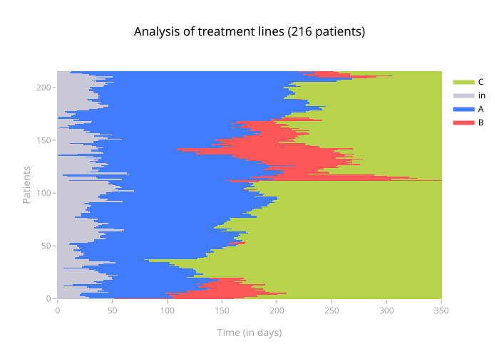
Note
When calling fit(), it is possible to change the distance (hamming by default), or the linkage method (ward by default).
Fit Parameters¶
n_clusters: the number of clusters to search formethod: method for computing the linkage matrix. Possible values are "ward", "single", "complete", "average". This parameter can often be left at the default value, which is "ward".distance: distance used for clustering. Can be any possible value for the metric argument of scipy.spatial.distance.pdist, "hamming" by default. Can also be a custom function, see #customize-the-distanceoptimal_ordering: Reorder tree leaves to minimize the distances between two successive leaves. This allows for better appreciation of the variety of sequences within each cluster in the visualization by grouping similar sequences together. This defaults to True, but can be switched off by providing False given this algorithm is computationnaly expensive.
Customizing the TAK Result¶
Change the color of an event¶
The update_colors() function allows to change the colors of events displayed on the TAK.
It can take different arguments:
- A dictionary
{"event name": "color in RGB or Hexadecimal"} - The event name as an argument and the color as a value
from opentak import TakBuilder, TakVisualizer
tak = TakBuilder(base).build()
tak.fit()
tak_viz = TakVisualizer(tak)
tak_viz.update_colors(
dict_new_colors={"A": "rgb(255, 114, 64)"}, B="#5E5A85"
)
tak_viz.process_visualization()
tak_viz.get_plot()
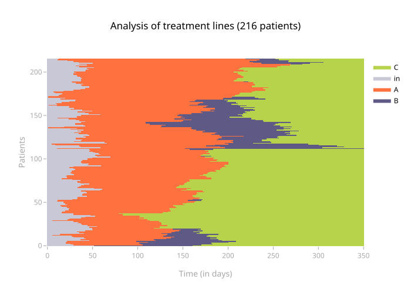
Warning
process_visualization() must be used after and not before changing the colors.
Change the name of events¶
When calling the TakVisualizer() class, it is possible to pass a dictionary dico_evt_for_legend which allows to rename the event names in the legend.
from opentak import TakBuilder, TakVisualizer
tak = TakBuilder(base).build()
tak.fit()
tak_viz = TakVisualizer(tak, dico_evt_for_legend = {"A": "New name for A"})
tak_viz.process_visualization()
tak_viz.get_plot()
Add a grid to the TAK¶
It is possible to add a grid to the TAK heatmap, on the X and/or Y axis, via add_xgrid, add_ygrid.
The plotly functions used are add_hline() and add_vline().
It is also possible to change the parameters passed to these functions via xgrid_params and ygrid_params.
Note
By default, the grid is added to both X and Y, with the following arguments for xgrid_params and ygrid_params:
line_width = 0.5, line_dash = "dot", line_color = "grey", opacity = 0.5
from opentak import TakBuilder, TakVisualizer
from opentak.visualization import add_grid_on_tak_fig
tak = TakBuilder(base).build()
tak.fit()
tak_viz = TakVisualizer(tak)
tak_viz.process_visualization()
fig = tak_viz.get_plot()
fig = add_grid_on_tak_fig(
fig,
grid = "xy",
params = {
"x":{"opacity": 1},
"y":{"opacity": 1}
}
)
fig
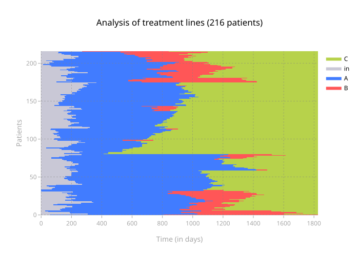
Calendar x axes¶
It is possible to request for the ticks on the x-axis to be marked every N months, by setting unit_as_months to True and nb_months to N.
tak_viz.get_plot(unit_as_months=True, nb_months=2)
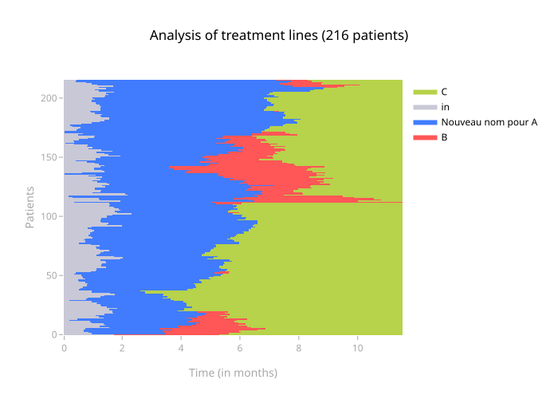
If the follow-up period is long, the x-axis can also be formatted in years with the unit_as_years argument.
tak_viz.get_plot(unit_as_years=True)
It is also possible to convert to dates via the base_date argument.
Be careful not to indicate unit_as_years=True, as this will remove the dates...
tak_viz.process_visualization(base_date=pd.to_datetime("2014-01-01"))
tak_viz.get_plot(unit_as_years=False)
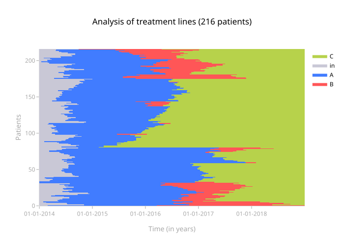
Display clusters¶
By specifying the number of clusters n_clusters as an argument to fit, it is possible to automatically find and display patient clusters.
Display clusters on one figure¶
from opentak import TakBuilder, TakVisualizer
n_clusters = 3
tak = TakBuilder(base).build()
tak.fit(n_clusters=n_clusters)
tak_viz = TakVisualizer(tak)
tak_viz.process_visualization()
figplotly_with_default_sep = tak_viz.get_plot(add_sep=True)
figplotly_with_default_sep.show()
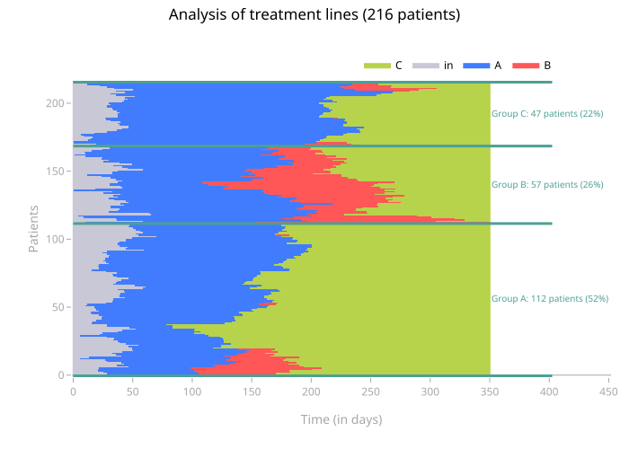
The size of the annotations, as well as their color, can be changed via size_annotation (default 10) and color_annotation (default "#4CA094").
figplotly_with_changed_annotation = tak_viz.get_plot(
add_sep=True, size_annotation=20, color_annotation="#0000FF"
)
figplotly_with_changed_annotation.show()
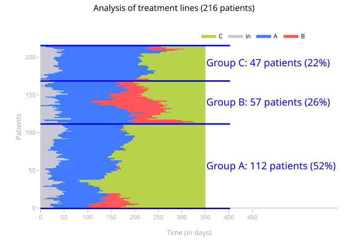
The size of the horizontal lines can be changed via coef_line_extension,
it is 0.15 by default (for a right extension of the bars by 15%).
The thickness of the horizontal bars can be changed via width_line,
it is 3 by default.
figplotly_with_changed_line_extension_and_width = tak_viz.get_plot(
add_sep=True, coef_line_extension=0.3, width_line=10
)
figplotly_with_changed_line_extension_and_width.show()
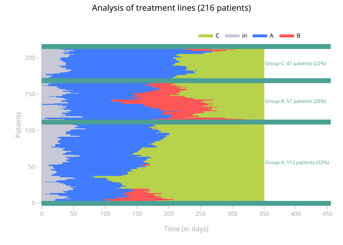
Display a specific cluster in a figure¶
num_cluster = 1
tak_viz.process_visualization(num_cluster=num_cluster)
# Generating Plotly figure
n_pat_cluster = len(tak.list_ids_clusters[num_cluster])
# Generating Plotly figure
fig = tak_viz.get_plot().update_layout(title_text=f"TAK cluster {num_cluster}, {n_pat_cluster} patients")
fig.show()
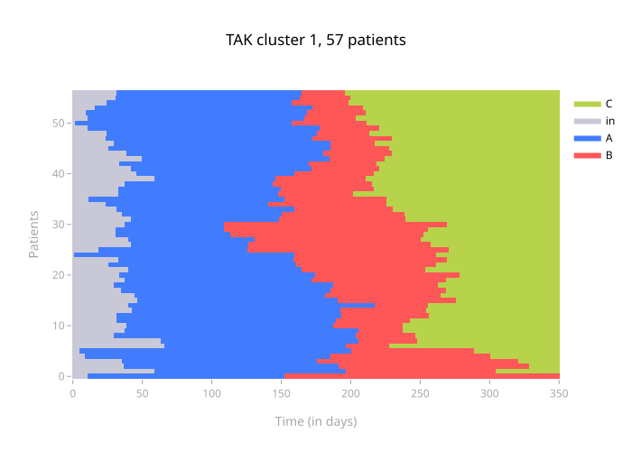
Customize the distance¶
The distance used by TAK is the Hamming distance.
TIMESTAMP by TIMESTAMP, it assigns 1 if the treatments of the 2 patients are different and 0 if they are identical, then all these 1s are summed and the result is divided by the number of TIMESTAMP.
This distance can be modified, either by a pre-coded distance by scipy, or by a custom function.
For example, when the patients in the cohort have very different follow-up times/periods, it may be useful to assign a lower weight to their "out of follow-up" periods.
Or, when 2 drugs are clinically "closer" (for example Drug_A_MCO and Drug_A_HAD), it may be useful to assign a higher weight to their distance from other drugs.
import numpy as np
def hamming_02(u, v):
"""Compiled distance metric for which timestamps involving
start (id 0), out (id 2) or death (id 3) are taken into account 5 times less
in the distance computation than other instants.
Example:
u = [ 0 | 0 | 0 | 5 | 2 | 2 ]
v = [ 5 | 5 | 5 | 5 | 5 | 5 ]
hamming = [ 1 | 1 | 1 | 0 | 1 | 1 ]
weight = [ 0.2 | 0.2 | 0.2 | 1 | 0.2 | 0.2 ]
d_per_instant = [ 0.2 | 0.2 | 0.2 | 0 | 0.2 | 0.2 ]
d = 0.2*5 / (1 + 0.2*5) = 1 / 2 = 0.5
"""
# parameters
coef = 0.2
id_low_dist = [0, 2, 3] # event ids: ["start", "out", "death"]
# classic hamming
hamming = u != v
u_low_dist = np.isin(u, id_low_dist)
v_low_dist = np.isin(v, id_low_dist)
weight = np.where(np.logical_or(u_low_dist, v_low_dist), coef, 1)
hamming_weighted = np.multiply(hamming, weight)
# normalization
res = hamming_weighted.sum()/weight.sum()
return res
Note: coef
If coef = 0, then the distance is computed as "all or nothing": when the patient is in start, out or death, they are no longer taken into account.
Otherwise, coef is a float, the closer it is to 0, the less weight the id_low_dist events have in the distance, the larger it is, the more weight they have.
If coef = 1, we return to the classic Hamming distance.
Warning: used ids
The distance is calculated between the event IDs, so make sure that in all cases the IDs indicated in your distance function correspond to the events you want to customize the distance for (for example using tak.dict_label_id)
Note: vectorize!
Working with a customized distance makes all calculations longer.
It is very important to avoid for loops, and therefore to work with vectorized calls (via numpy arrays)
Note: numba
Using numba (decorator @nb.njit) speeds up the calculation (factor of 4 on an estimate).
Unfortunately, numba does not recognize np.isin, so you have to write things differently if you want to use numba (example below).
import numpy as np
import numba as nb
@nb.njit
def hamming_02_numba(u, v):
"""Compiled distance metric for which timestamps involving
start (id 0), out (id 2) or death (id 3) are taken into account 5 times less
in the distance computation than other instants.
Example:
u = [ 0 | 0 | 0 | 5 | 2 | 2 ]
v = [ 5 | 5 | 5 | 5 | 5 | 5 ]
hamming = [ 1 | 1 | 1 | 0 | 1 | 1 ]
weight = [ 0.2 | 0.2 | 0.2 | 1 | 0.2 | 0.2 ]
d_per_instant = [ 0.2 | 0.2 | 0.2 | 0 | 0.2 | 0.2 ]
d = 0.2*5 / (1 + 0.2*5) = 1 / 2 = 0.5
"""
# parameters
coef = 0.2
# classic hamming
hamming = u != v
u_low_dist = (u == 0) | (u == 2) | (u == 3)
v_low_dist = (v == 0) | (v == 2) | (v == 3)
weight = np.where(np.logical_or(u_low_dist, v_low_dist), coef, 1)
hamming_weighted = np.multiply(hamming, weight)
# normalization
res = hamming_weighted.sum()/weight.sum()
return res
It may also be interesting to increase the weight of alignment on certain parts of the time window:
import numpy as np
def hamming_ponderation_around_end_of_line(u, v, time_end_line):
"""Compiled distance metric for which instants close to time_end_line
are weighted to have more importance
"""
# classic hamming
hamming = u != v
# weighting
# we want to greatly favor weights around t=0 on the TAK (which is actually at time_end_line
# because TAK does not take negative events as input)
weight = np.append(
np.logspace(0.25, 1, time_end_line), # increasing weights from t=0 to time_end_line
np.logspace(0.25, 1, len(u) - time_end_line)[
::-1
], # decreasing weights from t=time_end_line to the end
)
hamming_weighted = np.multiply(hamming, weight)
# normalization
res = hamming_weighted.sum() / weight.sum()
return res
Select a sub-TAK¶
Once the TAK is trained, it is possible to select only a sub-population to display.
Let's take the example of a trained TAK:
tak = TakBuilder(base).build()
tak.fit()
tak_viz = TakVisualizer(tak)
tak_viz.process_visualization()
tak_viz.get_plot()
We can display only the patients included in the list range(100) using the split() method.
# Split: Only select patients between ID 0 and ID 100
tak_viz.split(list(range(100)))
tak_viz.process_visualization()
tak_viz.get_plot()
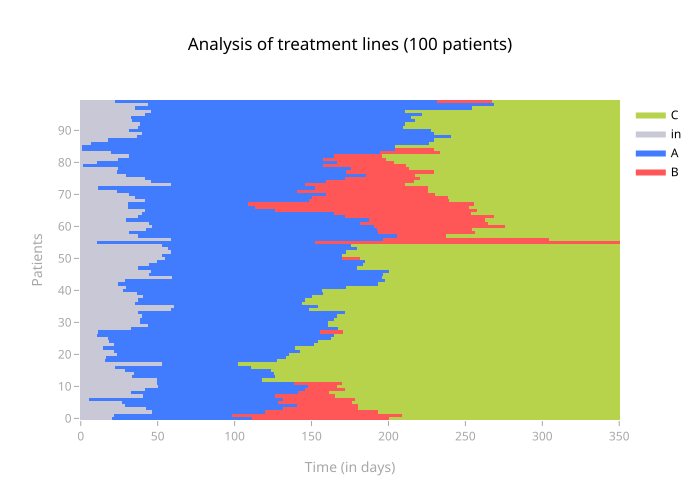
Note: reset_split()
To reset the TakVisualizer object, use the reset_split() method.
This same method works on a TAK with several clusters.
tak = TakBuilder(base).build()
tak.fit(n_sub_clusters=3)
tak_viz = TakVisualizer(tak)
tak_viz.process_visualization()
tak_viz.get_plot(add_sep=True)
Using the split() method does not disrupt the display of separations.
tak_viz.split(list(range(100)))
tak_viz.process_visualization()
tak_viz.get_plot(add_sep=True)
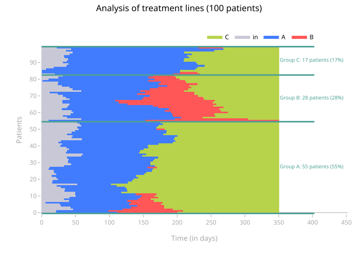
Visualize the dendrogram¶
Visualizing the dendrogram can be useful to visually determine the desired number of clusters.
tak_viz.get_plot(dendrogram=True)
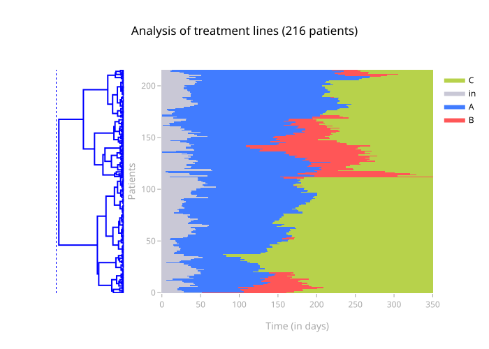
This function makes more sense with add_sep, as you can relate the clusters found to the dendrogram subtrees.
tak_viz.get_plot(add_sep=True, dendrogram=True)
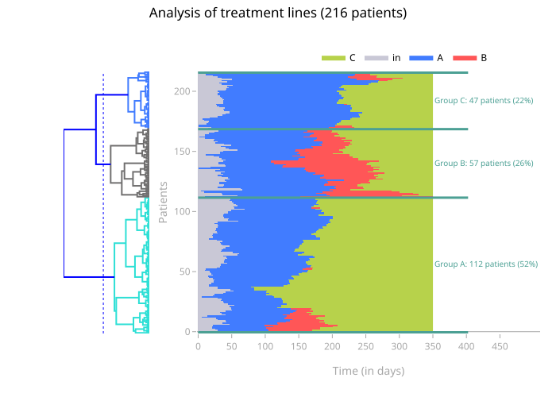